AIT3018 · Học kỳ I, năm học 2026-2027
Viện Trí tuệ nhân tạo · Trường Đại học Công nghệ, ĐHQGHN
Nhắm mắt, hình dung cửa ra vào nhà bạn. Bản lề nằm bên trái hay bên phải?
Mỗi dãy hiện 5 giây. Nhìn, rồi viết lại khi dãy biến mất.
Mỗi lá: một mặt là chữ cái, mặt kia là chữ số.
Quy tắc: nếu một mặt là nguyên âm thì mặt kia là số chẵn.
Mỗi lá: một mặt là đồ uống, mặt kia là tuổi.
Quy tắc của quán: ai uống bia thì phải từ 18 tuổi trở lên.
| Cần kiểm | Chữ và số | Đồ uống và tuổi |
|---|---|---|
| P: có điều kiện ở vế đầu | E: mặt sau có thể là số lẻ | Uống bia: có thể chưa đủ tuổi |
| Không Q: không đạt vế sau | 7: mặt sau có thể là nguyên âm | 16 tuổi: có thể đang uống bia |
Quy tắc “nếu P thì Q” bị vi phạm khi P đúng, Q sai.
Dựng hình trong đầu → tìm đường → rút ra kết luận → chọn hành động
Mental imagery: dựng lại thế giới trong đầu
Một biểu diễn hiện lên trong đầu khi vật thật không có mặt.
Khả năng tạo, giữ và thao tác trên trải nghiệm giác quan mà không cần đầu vào từ giác quan.
Nhiều kênh: nhìn, nghe, vận động, ngửi, nếm. Hát thầm một bài hát cũng là hình dung.
Tâm hồn không bao giờ suy nghĩ mà thiếu hình ảnh.
Đo hình ảnh bằng nội quan (introspection): tự quan sát rồi kể lại.
Hình ảnh là “huyền thoại của nội quan”; chỉ nghiên cứu hành vi.
Shepard, Kosslyn, Paivio đo hình ảnh bằng thời gian phản ứng.
Chụp ảnh não; máy chạy thử trước khi làm thật.
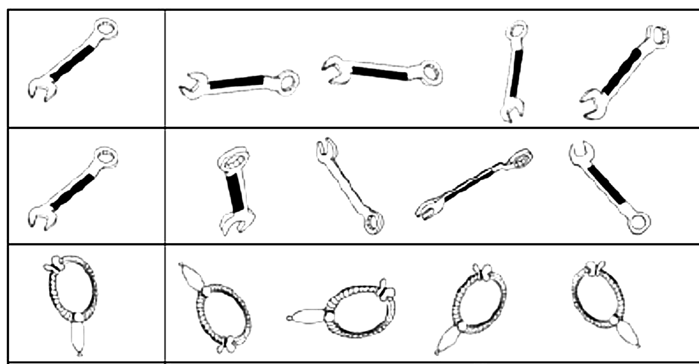
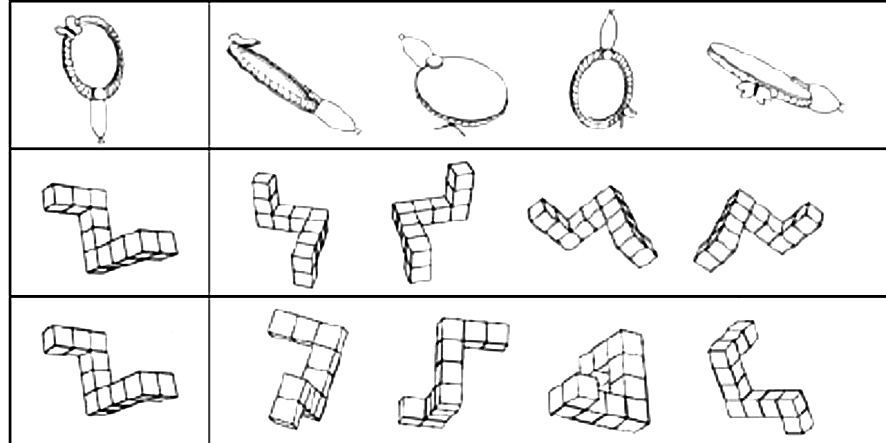
Nhiệm vụ: hai hình khối 3D là cùng một vật hay ảnh gương?
Kết quả: thời gian phản ứng tăng gần tuyến tính theo góc lệch.
Cách giải thích: người tham gia xoay hình qua các góc trung gian.
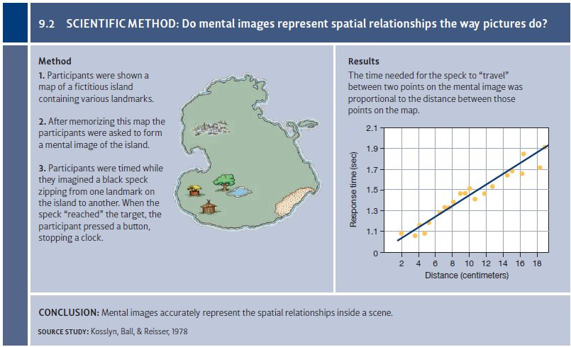
Kosslyn, Ball và Reiser (1978): học bản đồ, cất đi, rồi di chuyển một điểm tưởng tượng giữa hai mốc.
Đọc đồ thị: trục ngang là khoảng cách; trục dọc là thời gian.
Quét giữa hai mốc xa nhau mất lâu hơn.
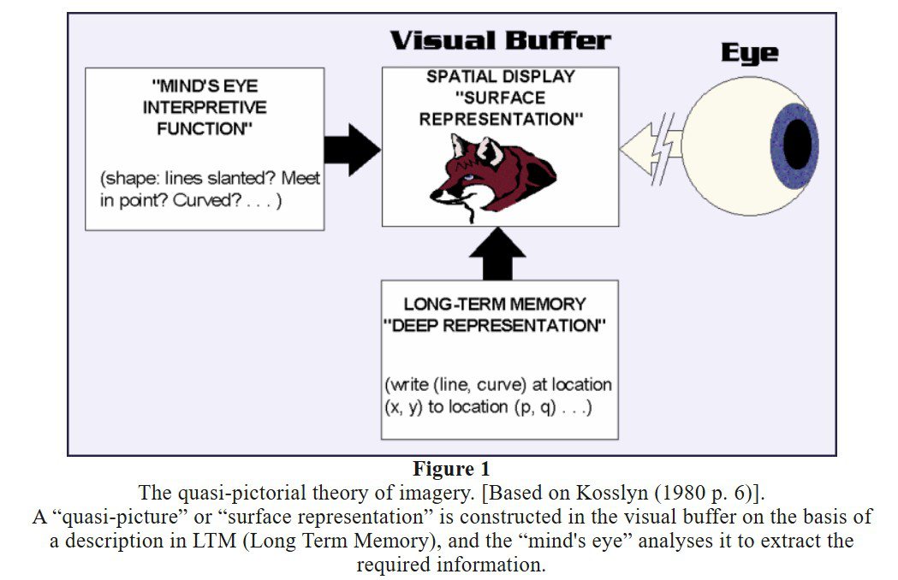
| Tầng | Vai trò |
|---|---|
| Biểu diễn sâu (deep representation) | Tri thức về vật trong trí nhớ dài hạn |
| Bộ đệm thị giác (visual buffer) | Không gian 2D tạm thời để dựng hình |
| Biểu diễn bề mặt (surface representation) | Hình hiện lên, có thể xem, quét, phóng to |
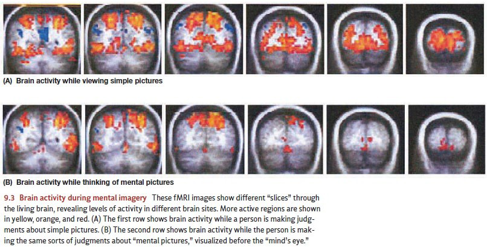
Hàng trên: nhìn hình. Hàng dưới: tưởng tượng hình. Trong hình này, một số vùng hoạt động chồng lấn; tín hiệu khi tưởng tượng yếu hơn.
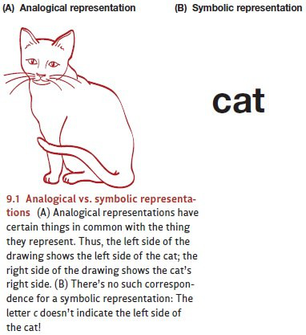
Pylyshyn: thông tin có thể được mã hóa bằng mệnh đề, chẳng hạn “cây ở phía bắc túp lều”.
Tri thức ngầm (tacit knowledge): người tham gia biết di chuyển xa thường mất lâu, nên có thể hình dung theo điều đã biết.
Cùng một kết quả có thể có nhiều cách giải thích.
| Biểu diễn tương tự | Biểu diễn mệnh đề |
|---|---|
| Giữ quan hệ không gian trong bố cục biểu diễn | Mã hóa vật và quan hệ bằng các ký hiệu |
| Ví dụ: sơ đồ cây cách túp lều một khoảng | Ví dụ: cách(cây, lều) = 50 m |
| Kosslyn dùng kết quả xoay và quét hình để bảo vệ mô hình | Pylyshyn hỏi vai trò của tri thức và chiến lược làm bài |
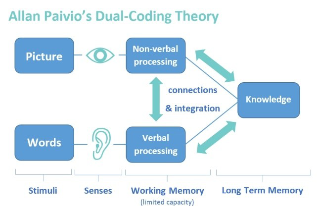
Paivio (1971): hai hệ riêng nhưng nối với nhau: ngôn ngữ và phi ngôn ngữ (hình ảnh).
Mã hóa bằng cả hai hệ: hai đường gợi lại, nên dễ nhớ hơn.
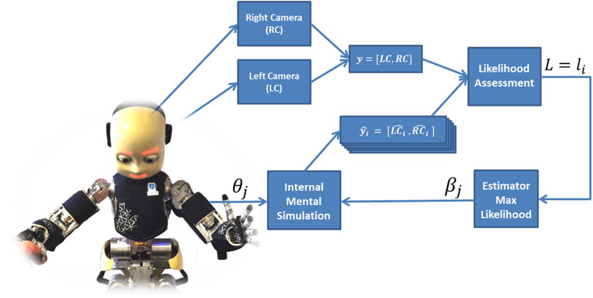
Tập trong đầu trước khi thi.
Hình dung tình huống khó, tập cách phản ứng.
Thấy trước khi xây.
Mô phỏng nội tại trước khi hành động.
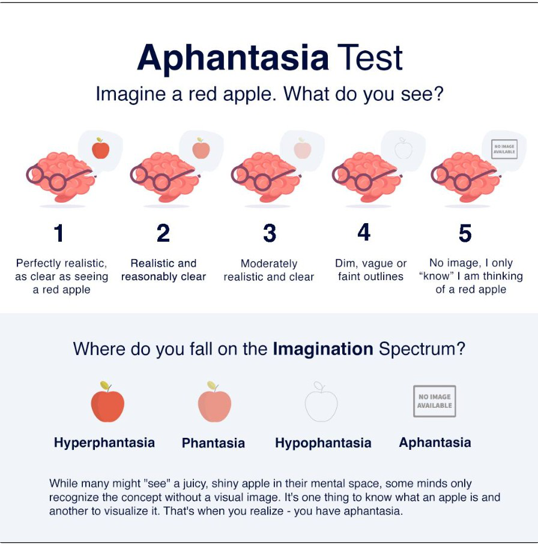
Thử: hình dung một quả táo đỏ. Bạn ở mức nào?
Aphantasia: không tạo được hình trong đầu; ước lượng khoảng 1-4% dân số.
Hyperphantasia: hình rõ như thật.
Problem solving: tìm đường từ chỗ đang đứng tới đích
| Newell và Simon | Trong môn tìm kiếm của AI |
|---|---|
| Trạng thái đầu (initial state) | Trạng thái xuất phát |
| Trạng thái đích (goal state) | Phép kiểm tra đích (goal test) |
| Toán tử (operators) | Hàm sinh trạng thái kế tiếp |
| Ràng buộc (constraints) | Điều kiện hợp lệ của nước đi |
| Không gian bài toán (problem space) | Không gian trạng thái |
Mô tả bài toán “từ cổng trường đến phòng 305-B” bằng đủ bốn thành phần.
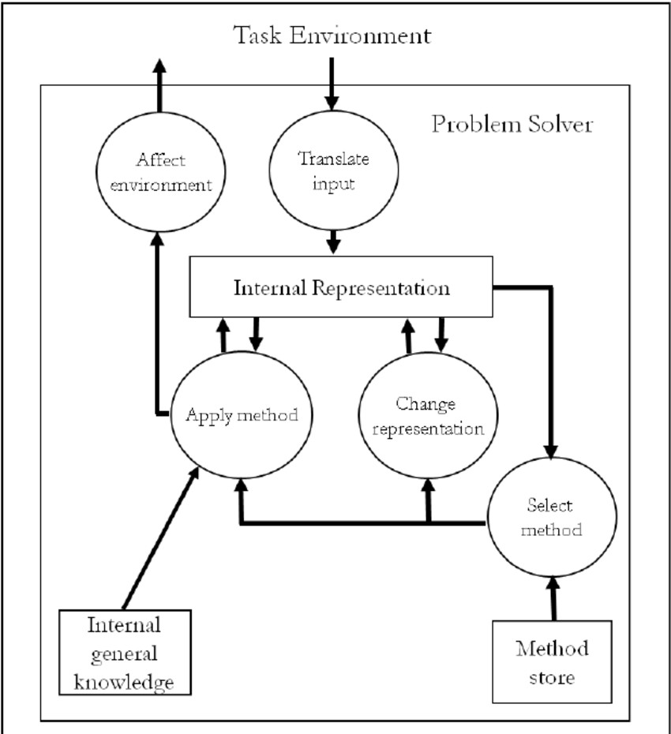
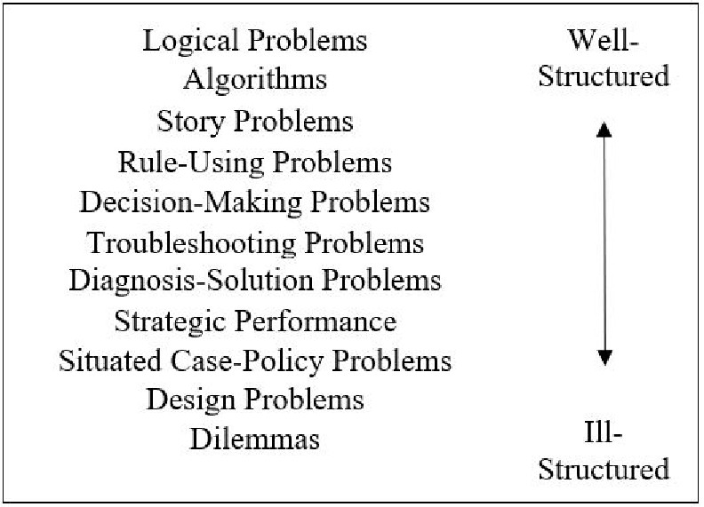
Mục tiêu, bước đi và tiêu chí kiểm tra lời giải được xác định rõ.
Cần làm rõ thêm mục tiêu, ràng buộc hoặc tiêu chí đánh giá.
Quy trình gồm các bước xác định.
Ví dụ: tìm kiếm nhị phân trong danh sách đã sắp xếp.
Quy tắc hoặc ước lượng giúp chọn hướng tìm.
Ví dụ: ưu tiên ô có vẻ gần đích.
Dùng quan hệ giữa hai bài toán để chuyển cách giải từ bài đã biết.
Một thuật toán có thể dùng heuristic: A* là một ví dụ.
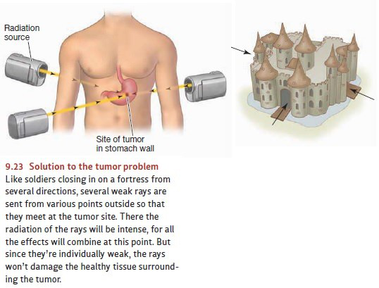
Kết quả: đọc chuyện vị tướng trước, nhưng không được gợi ý, rất ít người tự dùng nó.
Được gợi ý “hãy nghĩ tới câu chuyện”, đa số giải được.
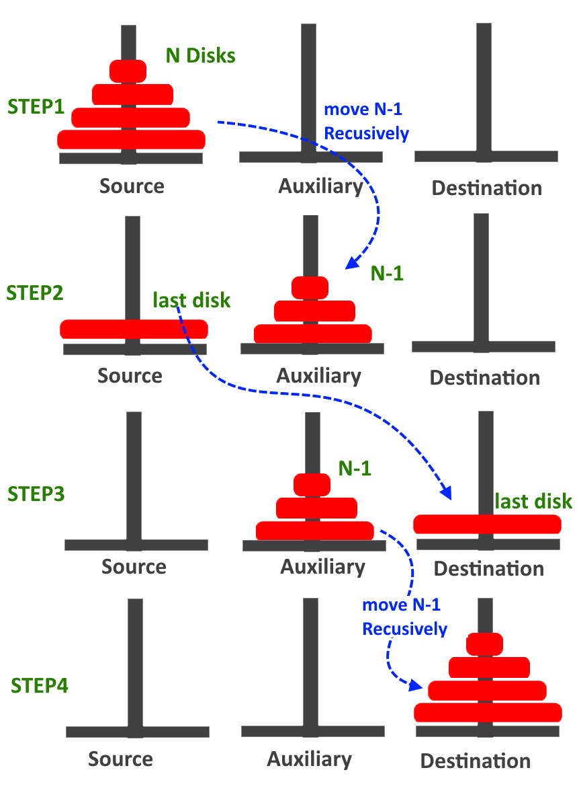
So sánh hiện tại với đích. Đặt mục tiêu con để thực hiện bước cần thiết.
Bừng hiểu (insight): đột nhiên nhận ra cách giải.
Ấp ủ ý tưởng (incubation): tạm gác bài toán sau khi suy nghĩ, rồi quay lại.
Dung tích tính bằng lít. Được đổ đầy, đổ hết và rót giữa các bình. Lấy đúng lượng nước ở cột cuối.
| Bài | A | B | C | Cần lấy |
|---|---|---|---|---|
| 1 | 21 | 127 | 3 | 100 |
| 2 | 14 | 163 | 25 | 99 |
| 3 | 18 | 43 | 10 | 5 |
| 4 | 9 | 42 | 6 | 21 |
| 5 | 20 | 59 | 4 | 31 |
Bài 1: B - A - 2C = 127 - 21 - 6 = 100.
| Bài | A | B | C | Cần lấy |
|---|---|---|---|---|
| 6 | 23 | 49 | 3 | 20 |
| 7 | 28 | 76 | 3 | 25 |
Bài 6: B - A - 2C = 20; cách ngắn hơn là A - C = 20.
Bài 7: công thức cũ cho 42. Cách giải: A - C = 25.
Lối mòn tư duy (mental set): tiếp tục cách làm quen dù có cách phù hợp hơn.
Dùng hộp đựng đinh làm giá đỡ nến.
Cố định chức năng (functional fixedness): chỉ nghĩ đến công dụng quen của một vật.
Muốn đỡ cây nến, chiếc hộp còn có thể được dùng như thế nào?
Tạo nhiều phương án: làm giá đỡ, hứng sáp, che gió...
Kiểm tra từng phương án: có gắn được vào tường, giữ nến đứng và hứng sáp không?
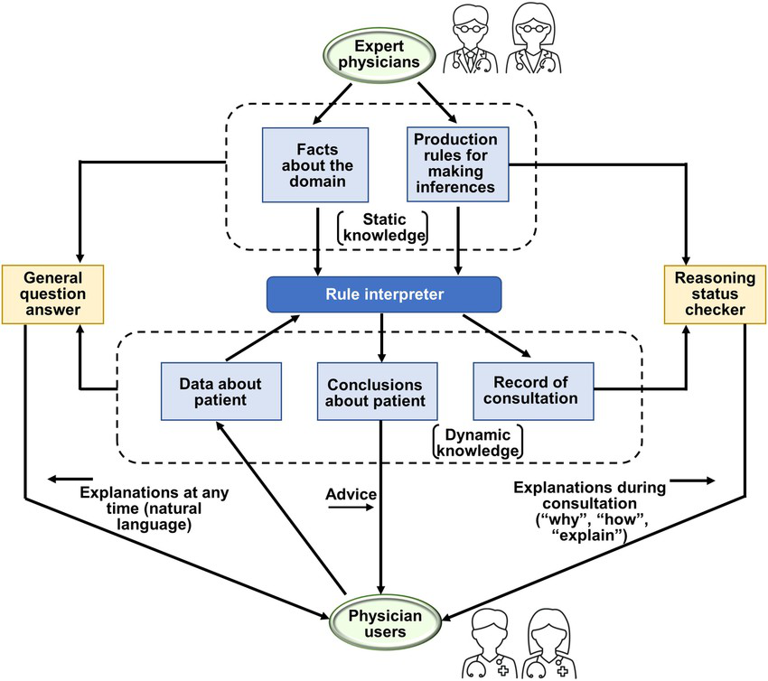
Chuyên gia giỏi hơn nhờ: gộp cụm (chunking), lược đồ (schema), tự động hóa (automaticity).
Hệ chuyên gia (1970-1980): luật “nếu - thì” lấy từ chuyên gia. MYCIN (chẩn đoán nhiễm khuẩn), DENDRAL (phân tích hóa học).
Reasoning: rút ra kết luận từ thông tin đang có
Bạn có 20 phút ăn trưa. Có cần xem hết mọi quán quanh trường?
Simon: việc lựa chọn bị giới hạn bởi thông tin, thời gian và khả năng xử lý.
Đặt tiêu chí tối thiểu, tìm và dừng khi gặp phương án đáp ứng.
Ví dụ: quán cách dưới 5 phút đi bộ, giá dưới 50.000 đồng, có món mình ăn được.
| Kiểu suy luận | Ví dụ | Bảo đảm |
|---|---|---|
| Diễn dịch (deduction) | Mọi loài thú có vú đều máu nóng. Cá voi là thú có vú. Vậy cá voi máu nóng. | Nếu tiền đề đúng và lập luận hợp lệ, kết luận phải đúng. |
| Quy nạp (induction) | Các con thiên nga đã thấy đều trắng. Dự đoán con tiếp theo cũng trắng. | Mở rộng từ quan sát đã có; kết luận có thể sai. |
Bayes: cập nhật xác suất của giả thuyết sau khi có bằng chứng.
Bệnh gặp ở 1% số người. Xét nghiệm phát hiện 90% người bệnh, báo nhầm dương tính ở 9% người khỏe. Một người dương tính: khả năng mắc bệnh là bao nhiêu?
Trong 1.000 người: khoảng 9 người bệnh dương tính và 89 người khỏe dương tính.
P(bệnh | dương tính) ≈ 9 / (9 + 89) ≈ 9%
Ứng dụng gửi nhắc học. Người nhận thông báo làm nhiều bài hơn.
| Câu hỏi | Cần phân biệt |
|---|---|
| Quan sát (association) | Người nhận thông báo có làm nhiều bài hơn không? |
| Can thiệp (intervention) | Nếu chủ động gửi thông báo, số bài làm có tăng không? |
| Phản thực (counterfactual) | Bạn An đã nhận thông báo và làm 5 bài. Nếu hôm đó không nhận, An sẽ làm bao nhiêu? |
Mọi loài hoa đều cần nước. Hoa hồng cần nước. Vậy hoa hồng là hoa. Lập luận có hợp lệ không?
Cùng dạng: … Cá voi cần nước. Vậy cá voi là hoa. Không hợp lệ.
| Lỗi | Là gì |
|---|---|
| Thiên kiến xác nhận | Tìm bằng chứng ủng hộ điều mình đã tin |
| Thiên kiến niềm tin | Chấp nhận lập luận vì kết luận nghe đúng |
| Khẳng định hậu kiện | Có “A thì B” và có B, kết luận A |
| Phủ định tiền kiện | Có “A thì B” và không A, kết luận không B |
Nhóm bạn phải chọn thư viện cho một dự án.
Chỉ nhớ một bài đánh giá nổi bật, bỏ qua các phép thử khác.
Đã thích một thư viện nên dễ bỏ qua điểm yếu của nó.
Mọi người đều đồng ý, nên bạn ngại nêu kết quả thử trái chiều.
Bút và tẩy giá tổng cộng 11.000 đồng. Bút đắt hơn tẩy 10.000 đồng. Tẩy giá bao nhiêu?
Tẩy 500 đồng, bút 10.500 đồng: tổng 11.000, chênh 10.000.
Nhanh, tự động, ít nỗ lực.
Câu trả lời quen dễ xuất hiện ngay.
Có chủ ý, cần chú ý và nỗ lực.
Kiểm tra các điều kiện của bài.
Decision making: chọn giữa các phương án khi chưa chắc chắn
EV = Σ pᵢxᵢ · pᵢ: xác suất; xᵢ: số tiền
Nhóm bạn chỉ nộp được vào một vườn ươm.
20% được nhận: 500 triệu.
80% trượt: 0 đồng.
70% được nhận: 120 triệu.
30% trượt: 0 đồng.
EV(A) = 100 triệu · EV(B) = 84 triệu
Lợi ích kỳ vọng (expected utility): tính theo giá trị của kết cục với người chọn.
EU = Σ pᵢu(xᵢ)
Minh họa: u(x) = √x, với x tính bằng triệu đồng.
| Phương án | Tiền kỳ vọng EV | Lợi ích kỳ vọng EU |
|---|---|---|
| A: 20% nhận 500, còn lại 0 | 100 triệu | 0,2√500 ≈ 4,47 |
| B: 70% nhận 120, còn lại 0 | 84 triệu | 0,7√120 ≈ 7,67 |
Với hàm lợi ích này, B được ưu tiên.
| Heuristic | Dựa vào | Ví dụ |
|---|---|---|
| Sẵn có (availability) | Điều dễ nhớ ra | Vừa đọc vài vụ mất dữ liệu nên tưởng sự cố ấy xảy ra rất thường xuyên. |
| Đại diện (representativeness) | Mức giống khuôn mẫu | Mô tả Linda có vẻ hợp với nhóm “nhân viên ngân hàng và hoạt động nữ quyền”. |
| Mỏ neo (anchoring) | Con số được nêu trước | Giá chào đầu tiên kéo mức giá mình nghĩ là hợp lý về phía nó. |
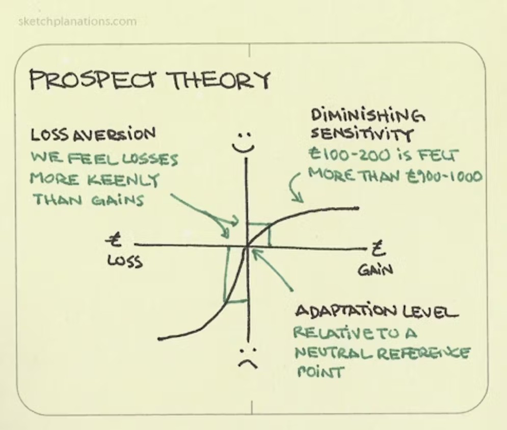
Đồng xu công bằng: sấp mất 100.000 đồng. Ngửa phải được ít nhất bao nhiêu để bạn nhận chơi?
Né mất mát (loss aversion): một khoản mất có thể tác động mạnh hơn khoản được cùng mức.
Kahneman và Tversky (1979): đánh giá được/mất quanh một điểm tham chiếu.
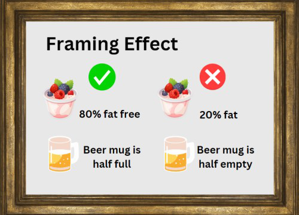
Cùng dữ kiện, đổi cách trình bày:
90% sống sót sau một tháng
hay
10% tử vong trong một tháng.
Tiếp tục vì đã lỡ bỏ nhiều tiền, công sức. “Đã tốn sáu tháng rồi, bỏ sao được.”
Đánh giá quá cao hiểu biết, độ chính xác hay khả năng kiểm soát của mình.
Tin mình tác động được kết quả ngẫu nhiên: ném xúc xắc mạnh tay để ra số lớn.
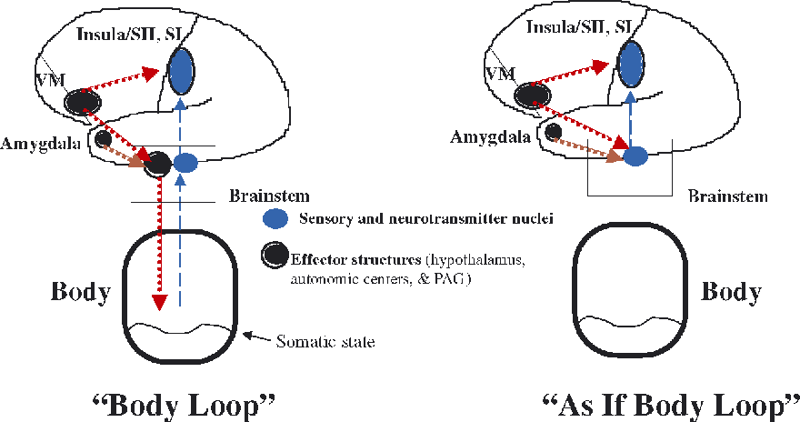
Giả thuyết chỉ dấu cơ thể (somatic marker), Damasio (1994): tín hiệu cảm xúc giúp đánh giá và ưu tiên các phương án.
Một số bệnh nhân tổn thương vùng trán vẫn làm tốt bài kiểm tra trí tuệ nhưng gặp khó khăn khi quyết định trong đời sống.
Moral Machine (2018): khoảng 40 triệu lựa chọn trong các tình huống xe tự lái giả định.
Người tham gia ưu tiên ai? Các nhóm có giống nhau không?
Nên dùng nguyên tắc nào? Ai chịu trách nhiệm và ai có quyền phản đối?
Bạn dự đoán một quán mới đáng 5/10, ăn xong chấm 8/10.
Sai số dự đoán = 8 - 5 = +3
Kết quả bất ngờ giúp điều chỉnh kỳ vọng. Một số tín hiệu dopamine phù hợp với sai số dự đoán phần thưởng.
Tác tử dùng phản hồi để cập nhật giá trị và cách chọn hành động.
Ví dụ cập nhật đơn giản: 5 + 0,2 × 3 = 5,6.
| Chủ đề | Câu hỏi vừa học | Liên hệ với AI |
|---|---|---|
| Hình ảnh tâm trí | Thông tin được biểu diễn và biến đổi thế nào? | Biểu diễn không gian, mô phỏng |
| Giải quyết vấn đề | Từ trạng thái hiện tại tới đích bằng cách nào? | Tìm kiếm và lập kế hoạch |
| Suy luận | Bằng chứng cho phép kết luận điều gì? | Logic, xác suất và nhân quả |
| Ra quyết định | Chọn theo xác suất và giá trị nào? | Hàm mục tiêu và học từ phản hồi |
Mở Quiz cuối buổi 5 trên Canvas.
8 câu về hình ảnh tâm trí, giải quyết vấn đề và ra quyết định. Làm một lần.
Đọc kỹ: ba giả định về hệ xử lý thông tin; kết quả thí nghiệm với Logic Theorist; các mục về lối mòn và bừng hiểu.
Nếu suy nghĩ chỉ là thao tác trên ký hiệu, thì còn thiếu gì?